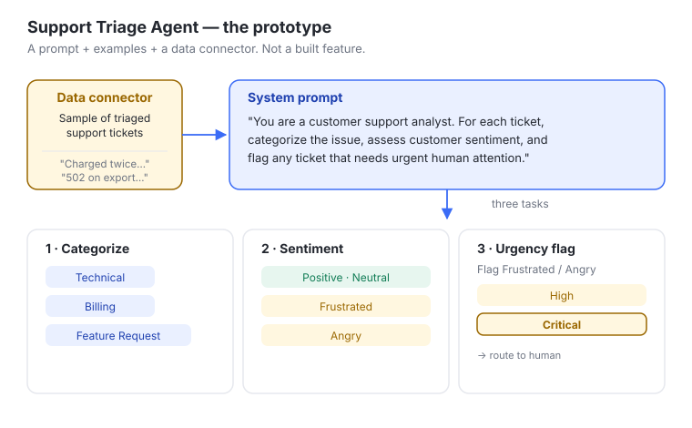
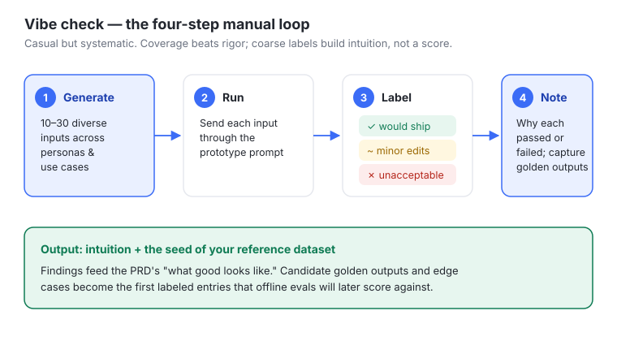
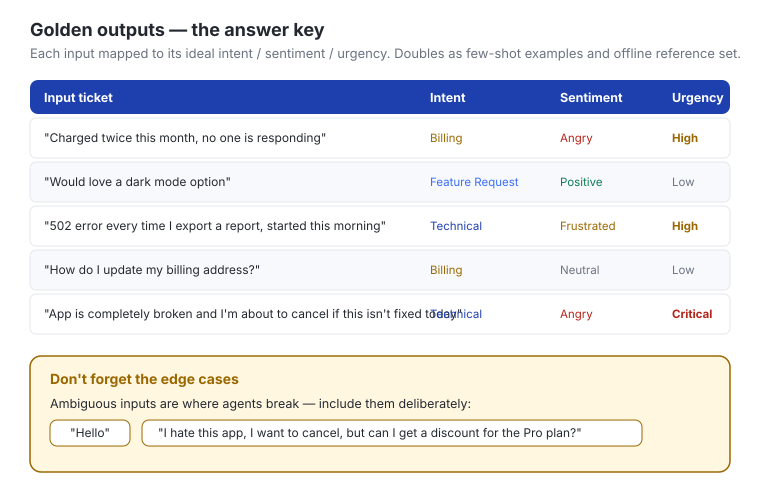
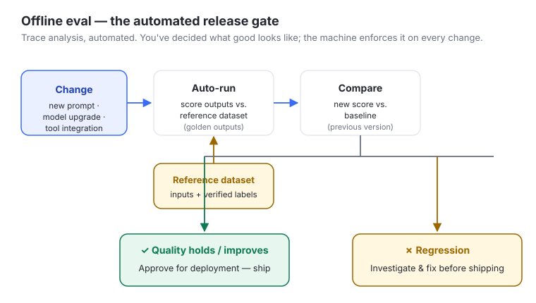
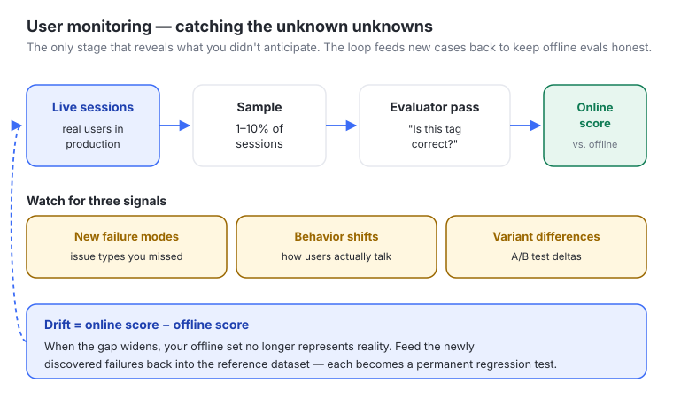

#Chapter 2 — The AI Eval Lifecycle
#In one line
Evaluating an AI feature is not a one-time gate before launch — it is a continuous lifecycle with three distinct stages (Vibe Checks → Offline Evals → User Monitoring), each matched to a phase of product development (prototype → build → optimize).
#Why it matters for PMs
For a deterministic feature, you write a spec, build it, test it once, ship it. AI features break that model: the same prompt can produce different outputs, failures are emergent rather than enumerable, and the underlying model can be swapped out from under you every few months. That changes the PM's job in three concrete ways:
- The PRD is no longer step one. For AI features the first step is a prompt prototype plus data collection; the PRD becomes the second or third step, and it is seeded by what you learn from the prototype. PMs who still open with a feature burn-down doc are specifying things they cannot yet know.
- Evaluation becomes the throughput bottleneck. The course's blunt rule of thumb: "If you can't confidently roll out a new model the same day it's released, the bottleneck on your team is evaluation." A PM who owns the eval system owns the team's velocity.
- Quality is something you measure continuously, not certify once. "Good" drifts as user language evolves and new issue types appear. The PM has to stand up the loops that catch that drift before it becomes a customer problem.
The payoff is concrete. The course cites Notion's AI team accelerating ~10X on the back of systematic evals — going from fixing 3 to 30 issues per day, shipping a new model to production in under 24 hours, with 50%+ adoption of premium AI features across their customer base.
#Core concepts
- The eval lifecycle: evaluation must span the entire product lifecycle, from earliest prototype to live production — not a single pre-launch check.
- Three stages, three methodologies:
- Vibe Checks (Prototype): manual, casual-but-systematic review of a few dozen diverse inputs, run before the PRD, to build intuition and seed the first dataset.
- Offline Evals (Build): automated scoring of outputs against a stored reference dataset, run before each release to verify a change had the intended effect.
- User Monitoring (Optimize): real-time / online tracking of production sessions (including A/B tests), run continuously after launch to catch the unexpected. Typically done on a 1–10% sample of all user sessions.
- Golden outputs: the ideal response an agent should produce for a given input. Surfaced during vibe checks, used both for few-shot prompting and as the answer key for offline evals.
- Reference dataset: the stored set of inputs + verified labels/golden outputs that offline evals score against. Starts small (~50 entries for the case study) and grows as monitoring feeds new cases back in.
- Production quality drift: the gap between your offline eval scores and your online monitoring scores. A growing gap means your offline set no longer represents reality.
- Demo before Memo: the philosophy that you prototype and vibe-check before writing the spec — the demo informs the memo, not the other way around.
#The mental model — how to think about this
Picture a left-to-right pipeline that mirrors how the product itself matures:
PROTOTYPE ───────► BUILD ───────► OPTIMIZE
Vibe Checks Offline Evals User Monitoring
(manual, diverse (automated scoring (real-time, real
inputs; build vs. reference users; catch the
intuition; seed dataset; gate unexpected; feed
the dataset) every release) cases back left)
Three shifts define the model:
- Manual → Automated → Live. Rigor and automation increase left to right; you start by eyeballing outputs and end with continuous instrumentation.
- Known unknowns vs. unknown unknowns. Offline evals only test what you already know to look for. Online monitoring is the only stage that reveals what you didn't anticipate. You need both.
- It's a loop, not a line. The arrow doesn't just point right. New failure cases discovered in monitoring get written back into the reference dataset, which makes the next round of offline evals smarter. Each user-found failure becomes a permanent regression test.
The trap to internalize: most teams stop at a vibe check, or build a single offline eval for "overall correctness" on a dataset of fewer than 100 inputs — and then wonder why they can't experiment quickly or trust the results. That is the canonical failure mode this chapter exists to prevent.
#Key frameworks / steps / loops
Stage 1 — Vibe Check workflow
- Generate 10–30 test inputs covering different personas and use cases.
- Run each through your prototype.
- Label each output: ✓ (would ship this), ~ (needs minor edits), ✗ (unacceptable).
- Take notes on why each passed or failed; capture early findings and candidate golden outputs.
Stage 2 — Offline Eval workflow
- Engineer makes a change (new prompt, model upgrade, tool integration).
- System automatically runs the change against the reference dataset.
- Results are compared to baseline (the previous version).
- If quality holds or improves → approve for deployment. If it regresses → investigate and fix before shipping.
Stage 3 — User Monitoring loop
- Sample production sessions (1–10%) and score them online — for the triage agent, sample AI-tagged tickets and ask an evaluator "Is this tag correct?"
- Watch for three signals: emerging new failure modes, shifts in user behavior, differences between experimental variants.
- When the offline-vs-online gap (drift) starts to grow, add the new failure cases back into the reference dataset before it becomes systemic.
Demo-before-Memo sequence (the meta-loop) Prototype (prompt + connector) → Vibe Check → now write the PRD (seeded with high-value examples + expectations for the AI) → build Offline Evals from that dataset → ship → User Monitoring → feed cases back.
#Visual explainers
ch1-01-style intro / lifecycle slide) — Shows the three stages laid out across the product-development phases: Vibe Checks under Prototype, Offline Evals under Build, User Monitoring under Optimize. Teaching point: the diagram is the whole chapter in one image — each phase of building demands its own evaluation methodology, and the stages connect (monitoring feeds back into offline evals). It also annotates where user research bootstraps the prompt, where you benchmark against a synthetic-or-stored reference set, and where you A/B test and catch regressions in real time.
ch1-02-support-triage-agen.jpg) — Depicts the running case study: the agent's system prompt ("You are a customer support analyst…") and its three tasks (categorize into Technical/Billing/Feature Request; assign sentiment Positive/Neutral/Frustrated/Angry; flag Frustrated/Angry tickets with urgency High/Critical), plus a sample of triaged tickets fed in by a connector. Teaching point: a "prototype" is genuinely just a simple prompt + some examples + a data connector — not a built feature. This is what you vibe-check against before any PRD exists.
ch1-03-vibe-check-workflow.png) — Illustrates the four-step manual loop: generate 10–30 diverse inputs → run through prototype → label ✓ / ~ / ✗ → take notes. Teaching point: a vibe check is casual but systematic — coverage matters more than rigor, and the labels are deliberately coarse because the goal is intuition, not a precise score.
ch1-04-golden-outputs.png) — Shows five hypothetical golden-output entries, each an input mapped to its ideal intent / sentiment / urgency:- "Charged twice this month, no one is responding" → Billing / Angry / High
- "Would love a dark mode option" → Feature Request / Positive / Low
- "502 error every time I export a report, started this morning" → Technical / Frustrated / High
- "How do I update my billing address?" → Billing / Neutral / Low
- "App is completely broken and I'm about to cancel if this isn't fixed today" → Technical / Angry / Critical Teaching point: golden outputs are the answer key. They double as few-shot examples for the prompt and as the reference set for offline scoring. The dataset must also include edge cases ("Hello"; "I hate this app, I want to cancel, but can I get a discount for the Pro plan?") because ambiguous inputs are where agents break.

ch1-05-offline-eval-workfl.png) — Diagrams the automated gate: change → auto-run vs. reference dataset → compare to baseline → approve if quality holds/improves, investigate if it regresses. Teaching point: this is "trace analysis, automated" — you've already decided what good looks like, so the machine can now enforce it at scale on every release.
ch1-06-user-monitoring.jpg) — Depicts live production scoring: sampling real sessions, an evaluator checking correctness, and watching for failure modes / behavior shifts / variant differences. Teaching point: this is the only stage that catches unknown unknowns, and the arrow loops back — new cases re-enter the reference dataset to keep offline evals honest.#How this connects to: simulation / dataset strategy / synthetic data / actual data
- Dataset strategy: the dataset is the spine of the whole lifecycle. It is born in vibe checks (golden outputs + edge cases), consumed by offline evals (the reference set every change is scored against), and grown by user monitoring (new failures fed back). For the case study it starts at ~50 historical tickets with verified labels. A small static dataset that never grows is exactly the sub-100-input pitfall the chapter warns against.
- Synthetic vs. actual data: the narration is explicit that the offline reference set can be "either synthetic or stored." Synthetic data lets you cover personas and edge cases you haven't seen in production yet (generate 10–30 inputs across personas in the vibe-check step); actual data (stored historical tickets, sampled live sessions) anchors you to reality. The healthy pattern is synthetic to bootstrap and stress-test, actual to validate and to detect drift.
- Simulation: vibe checks and offline evals are forms of simulation — you replay representative inputs through the system before exposing real users. The fidelity ladder runs: hand-picked simulated inputs (vibe check) → larger curated/synthetic reference set (offline) → real sampled sessions (monitoring). Each rung trades control for realism.
- Actual data is the closing of the loop: production sessions are both the ultimate test (online monitoring) and the renewable supply of new dataset entries. Drift is the metric that tells you when your simulated/offline view has fallen out of sync with actual behavior.
#Working with ML / eng teams
- Offline evals live where engineers already work. The workflow is triggered by an engineer's change (new prompt, model upgrade, tool integration) and runs automatically against the reference set — treat it like CI for AI quality. The PM's job is to make sure that gate exists and that "baseline" and "regression" are clearly defined.
- The PM owns "what good looks like"; eng owns automating it. Vibe-check findings and golden outputs are the PM's contribution; turning them into a repeatable, scalable automated check is the engineering contribution. The handoff artifact is the labeled dataset, not prose.
- Frame model upgrades as eval problems, not research problems. When a new model drops, the question isn't "is it better in general" but "is it better for this product on this task" — answerable in hours if the eval set exists. Use the "ship a new model same-day" rule of thumb as the shared team goal.
- Instrument early. Online monitoring (sampling, an evaluator pass, drift tracking, feedback-to-dataset plumbing) is eng infrastructure that needs to be planned during build, not bolted on after launch.
#Role of design
The module doesn't foreground design, so most of this is connective rather than lifted from the source. Where design shows up:
- Prototype as a design surface: the prototype (prompt + sample data + connector) is the earliest artifact a designer/PM/eng can react to together — it makes the AI's behavior tangible before any UI exists.
- Designing for failure modes vibe checks surface: vibe-checking the triage agent revealed the need for a neutral "clarification needed" mode for very short inputs ("Help!"). That is a design decision discovered through evaluation — the eval found the gap, design fills it.
- Designing the human-in-the-loop: flagging Frustrated/Angry tickets for human intervention, and the monitoring evaluator's "Is this tag correct?" check, are interaction patterns design must shape.
#Process to follow
- Stand up a thin prototype: a simple prompt + a few examples + a connector to real sample data. Don't write the PRD yet.
- Run a vibe check: 10–30 diverse inputs across personas; label ✓ / ~ / ✗; note why each passed or failed.
- Capture golden outputs and edge cases from the vibe check; this is the seed of your reference dataset.
- Now write the PRD — focused on expectations for the AI (what good looks like, target accuracy, failure handling), seeded with the high-value examples. Not a feature burn-down list.
- Build offline evals against the reference set (e.g., categorization accuracy, sentiment precision). Wire them to auto-run on every change vs. a defined baseline.
- Gate releases on the offline evals: ship if quality holds/improves, investigate if it regresses.
- After launch, sample 1–10% of production sessions and score them online; watch for new failure modes, behavior shifts, and variant differences.
- Track drift (offline vs. online gap). Feed newly discovered failures back into the reference dataset so the next offline run catches them.
- Repeat — each cycle widens dataset coverage and tightens the loop.
#References & sources
- Source module: "Reforge: The AI Eval Lifecycle — Module Summary" (Notion page
3775d116494180f5aee4de2ceb93373f), part of the Reforge "Evals for PMs" course (SCORM lessons hosted onreforge_docebosaas_com). Lessons: Intro · Case Study: Support Triage Agent · Stage 1 Vibe Checks · Stage 2 Offline Evals · Stage 3 User Monitoring · Demo before Memo · Recap & Further Learning. - Recommended article: Demystifying evals for AI agents — Anthropic.
- Recommended article: Your AI agent needs Evals — Hamel Husain (hamel.dev).
- Case reference: Notion AI team's ~10X acceleration via systematic evals — referenced video: https://youtu.be/6YdPI9YbjbI (3→30 issues/day; new models to prod in <24h; 50%+ premium feature adoption).
- Running case study: Support Ticket Triage Agent (categorize Technical/Billing/Feature Request; sentiment Positive/Neutral/Frustrated/Angry; urgency High/Critical).
- Forward references in-course: Trace Analysis (Module 4); designing & implementing offline evals (Modules 2–3 / "chapters 4–8" in the narration); encoding quality criteria into the AI PRD (next module).
- Images:
ch1-02-support-triage-agen.jpg,ch1-03-vibe-check-workflow.png,ch1-04-golden-outputs.png,ch1-05-offline-eval-workfl.png,ch1-06-user-monitoring.jpg.
#Skill / template / app ideas
/vibe-checkskill: given a prompt + a handful of sample inputs, generate 10–30 diverse persona-spanning test inputs, run them, and return a ✓/~/✗ labeled table with a notes column and auto-extracted candidate golden outputs.- Golden-dataset template: a structured table (input · golden intent · golden sentiment · golden urgency · is-edge-case · source) that doubles as few-shot examples and offline reference set.
- Offline-eval harness app: point it at a model/prompt version and a reference dataset; it auto-runs, scores vs. baseline, and produces a "ship / investigate" verdict with per-metric deltas — the "can I ship the new model today?" button.
- Drift dashboard: plots offline eval score vs. online monitoring score over time; alerts when the gap widens past a threshold and queues the offending cases for review-and-add-back.
- Demo-before-Memo PRD template: a PRD scaffold whose first sections are "Prototype link," "Vibe-check findings," and "Expectations for the AI (what good looks like)" — forcing the prototype-first sequence.
- Monitoring sampler: samples 1–10% of production sessions, runs an LLM-judge "Is this correct?" pass, and routes failures into the dataset feedback queue.
#Teaching notes (for the instructor)
- Lead with the failure mode. Open by asking the room how they evaluate AI features today; most will describe a one-time vibe check or a single small offline set. Name that as the exact pitfall (stopping at vibe checks, or one <100-input eval) — it lands harder as a correction than as abstract advice.
- Anchor everything to the triage agent. Walk the same example through all three stages so the lifecycle feels like one continuous story, not three disconnected techniques. The golden-outputs table is the best concrete artifact to dwell on.
- Hammer "Demo before Memo." This is the most counterintuitive and most PM-relevant idea in the chapter. Many PMs' identity is tied to owning the PRD as step one; reframe the PRD as something the prototype earns the right to specify.
- Use the two rules of thumb as memorable taglines: (1) "If you can't ship a new model the day it drops, your bottleneck is evaluation." (2) "If offline metrics say quality is up but complaints are rising, you're measuring the wrong thing." Both are sticky and exam-ready.
- Make the loop visible. Students often hear "three stages" as linear. Explicitly draw the feedback arrow from monitoring back to the offline dataset — that's what separates a real eval system from a checklist.
- Distinguish known vs. unknown unknowns when contrasting offline evals and monitoring; it's the cleanest way to explain why you can't skip monitoring even with great offline coverage.
- Note the small numbers honestly. The case study uses ~50 tickets and 50–70% starting accuracy — emphasize that starting small and imperfect is correct, as long as the dataset grows. The sin is staying small, not starting small.
- Set up the next module: the chapter ends pointing forward to encoding quality criteria into the AI PRD, and to Trace Analysis (Module 4). Tee those up so the lifecycle feels like the map for the rest of the course.
- Source hygiene: the raw transcript tail contained unrelated audio bleed (a science "density experiment" narration and stray dialogue) — this is contamination from the recording, not course content; ignore it.